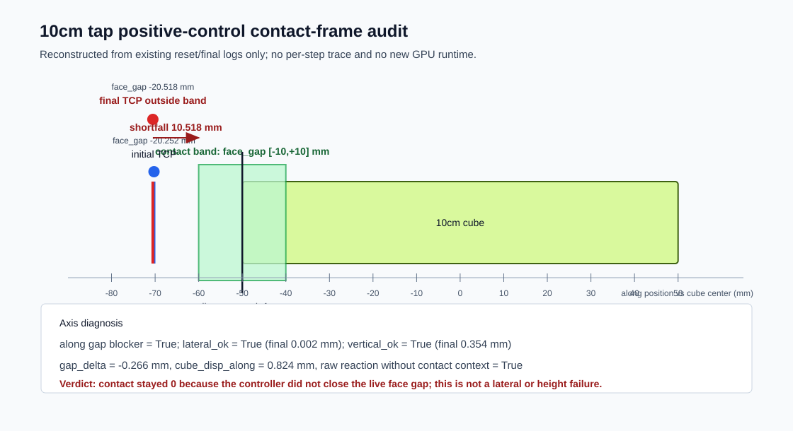

10cm tap positive-control visual contact audit
This is a reconstructed initial/final contact-frame inspection from existing local logs only. It is not a per-step video trace and it did not launch a new GPU runtime.
SVG: cube10cm_tap_rl_positive_control_external_closed_loop_strict_visual_contact_audit.svg; PNG: cube10cm_tap_rl_positive_control_external_closed_loop_strict_visual_contact_audit.png

| initial_face_gap_m | -0.020252298563718796 |
|---|---|
| final_face_gap_m | -0.02051849290728569 |
| final_shortfall_to_contact_band_m | 0.01051849290728569 |
| initial_along_m | -0.0702522985637188 |
| final_along_m | -0.0705184929072857 |
| gap_delta_m | -0.00026619434356689453 |
| cube_disp_along_m | 0.0008241236209869385 |
| final_lateral_m | 2.4680434762558434e-06 |
| final_vertical_offset_m | 0.00035447441041469574 |
| contact_seen | 0.0 |
| reaction_signal | 1.0 |
| reaction_context | 0.0 |
| tap_success | 0.0 |